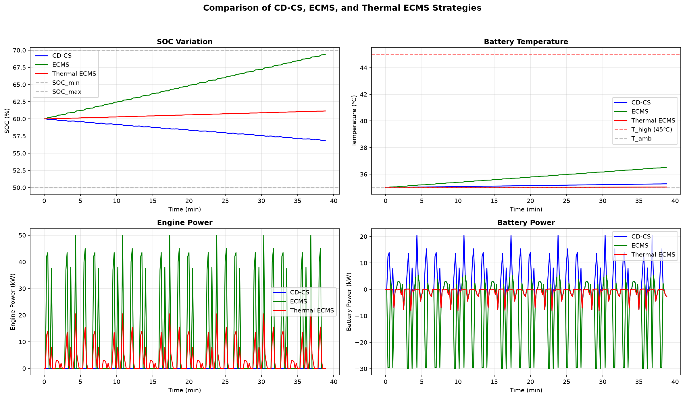

Driving demand
CLTC-P speed and acceleration were converted into traction power using longitudinal vehicle dynamics.
A coordinated simulation framework for comparing online and globally optimized energy-management strategies under the CLTC-P driving cycle.
The framework connects vehicle demand, powertrain efficiency, battery state, and thermal constraints in one repeatable simulation pipeline.
CLTC-P speed and acceleration were converted into traction power using longitudinal vehicle dynamics.
Engine fuel use, motor efficiency, battery SOC, and first-order thermal behavior were modeled.
CD-CS, ECMS, and temperature-aware ECMS allocated power between the engine and battery.
Dynamic programming provided a global-optimization reference for evaluating online strategies.
The comparison progresses from rule-based control to real-time optimization, thermal-aware control, and a global benchmark.
Switches between charge-depleting and charge-sustaining modes using SOC thresholds.
Converts battery energy into equivalent fuel use and optimizes instantaneous power allocation.
Adds a temperature-dependent penalty to reduce battery loading at elevated temperatures.
Uses SOC and battery temperature as states to estimate a global optimization benchmark.

Baseline condition: 30 CLTC-P cycles, 35 °C ambient temperature, initial SOC of 0.60, ECMS equivalence factor of 1.6, and thermal penalty weight of 5.0.
| Strategy | Equivalent fuel consumption (L/100 km) | Final SOC | Peak battery temperature (°C) |
|---|---|---|---|
| CD-CS | 7.05 | 0.569 | 35.3 |
| ECMS | 22.32 | 0.694 | 36.5 |
| Thermal ECMS | 14.09 | 0.612 | 35.0 |